We begin with (3.9) and forcing it to satisfy the local equation
(3.7). In the interest of brevity, all indices i are dropped and we
focus on a single basis function. Also, we denote the horizonal and
vertical components of  as
as
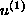
and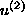
respectively. Expanding in powers of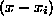
and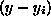
, we can equate each coefficient with zero to derive the appropriate dynamical system. We drop all indices except on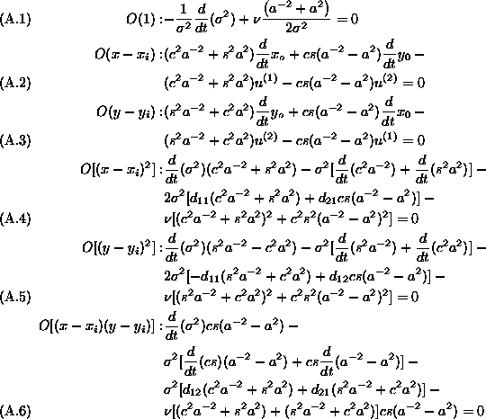
Clearly, the evolution of the basis function width in (3.12)
arises from (A.1).
The evolution equations for position,  in
(3.12), come from (A.2) and (A.3).
We use these evolution equations together with the identity
in
(3.12), come from (A.2) and (A.3).
We use these evolution equations together with the identity
to simplify the remaining three expressions as follows.
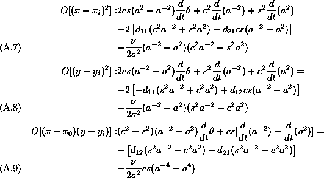
Adding (A.7) and (A.8) together, one finds
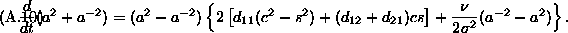
Since
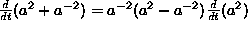
, one can reduce the previous equation to an evolution equation for the aspect ratio:
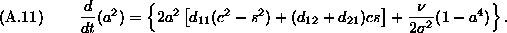
Similarly, one can multiply (A.9) by
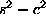
, add to this quantity sc times the difference of (A.7) and (A.8) to obtain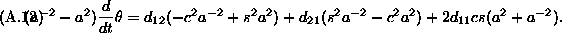
The right hand side of (A.12) can decomposed into
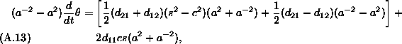
which can be simplified into
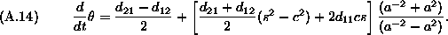
This completes the derivation of the dynamical system presented in §3.